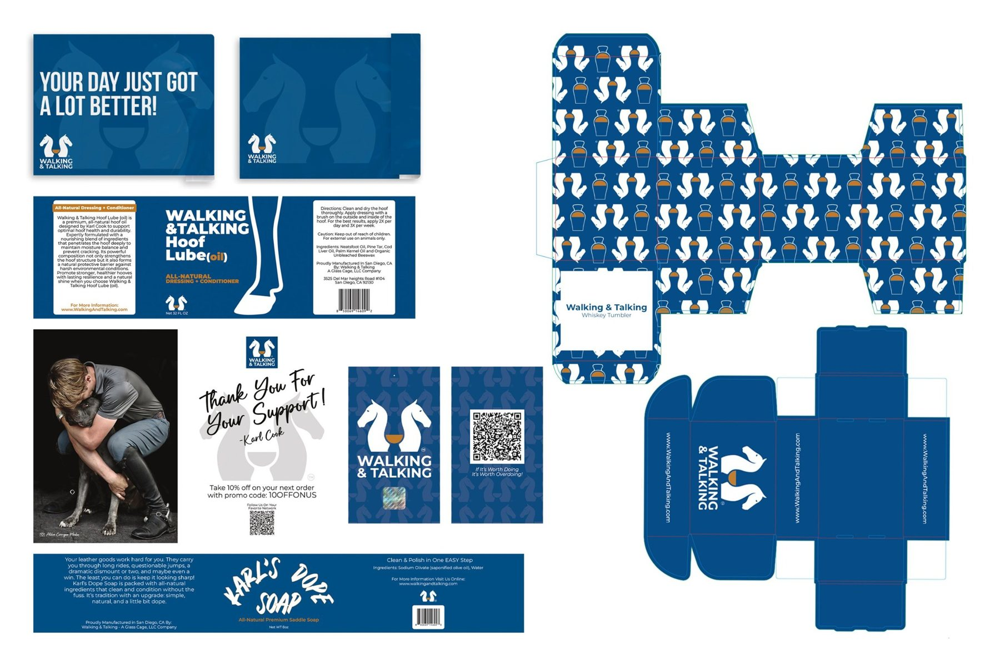
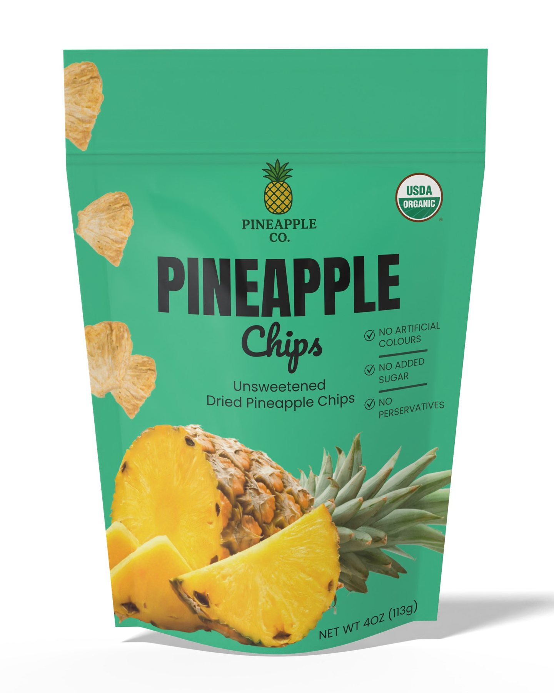
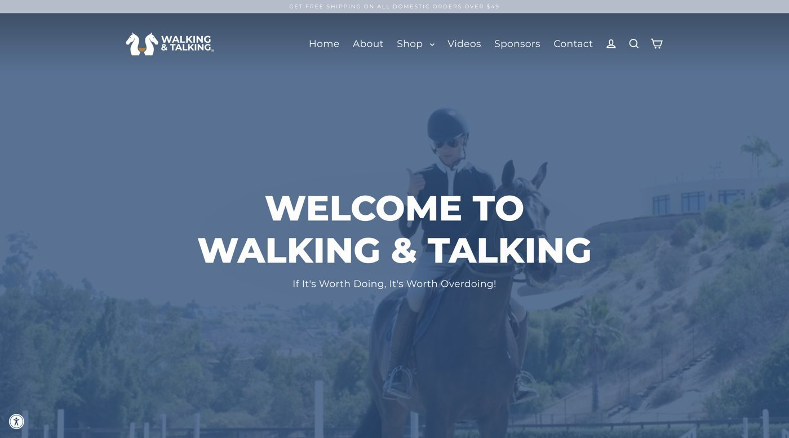
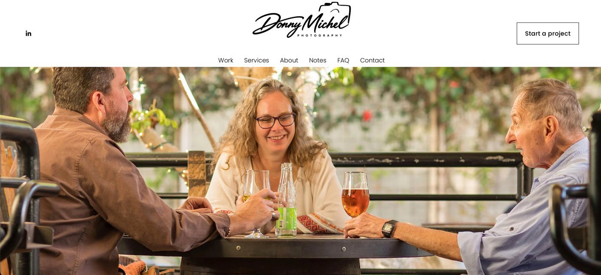

TV commercials
Mor Furniture for Less, 2025–26- Role
- Everything, from concept to final cut
- Pre-production
- Concept, storyboard, script
- Production
- Filming
- Post
- Edit, color, AI voiceover
- Ran on
- Broadcast TV, YouTube and social
Creative director with thirteen years behind the camera, in the edit, on the layout and, lately, in the code. I’ve led brand and content for furniture retail, global e-commerce, legal media and premium building materials.
Strategy first. Then whichever tool the idea needs.
Behind the scenes with About Town Magazine · product and food photographyYouTube ↗Brand, food, product, headshot and portrait work for companies nationwide since 2013. View the full portfolio at donnymichelphotography.com ↗
Concept, script, camera, edit and color, usually by the same person. TV commercials and long-form brand video built to perform.
A one-person crew with a small kit, built for speed and authenticity over polish. I took each piece from concept to camera, audio, edit and posting, and managed all of Karl Cook’s social media: Instagram as the main channel for posts and reels, YouTube as the long-form channel we had just started to grow.
The brief was real moments, published consistently. The audience responded to exactly that.
Packaging taken from sketch to physical prototype, and brand systems that hold together across print, retail and feed.


Sites designed, built and grown, from small-business launches to a global storefront. Platform-fluent, not platform-bound.

Seacoast Video WordPress Design, build and ongoing management Skyline IT WordPress Design and build Donny Michel Photography Squarespace Design and build of my own photography studio site
I designed and laid out this portfolio, donnymichel.com, from the first sketch to the final page.
The newest tool in the kit. Native apps for iPhone and iPad, in development and up next, designed and built end to end with AI-assisted development.
Snap a business card straight into your contacts, swap cards phone to phone, or share your own personal QR code.
iPhone & iPad · SwiftGolden hour, blue hour, sun path and shadows for any location, with alerts and calendar sync.
iPhone & iPad · Swift, WeatherKit, Apple MapsPull exact colors from any photo, build palettes from color harmony rules and copy the values straight into your work.
iPhone & iPad · SwiftSeveral web applications, including a dealer portal, a material estimator and a tile pattern tool. Real tools the team actually opens.
For my full background, visitmy LinkedIn page ↗
I studied marketing, built and sold an e-commerce company, and have spent the years since leading creative inside brands.
That mix is the point: I can set the direction, defend it in the room, and then produce it at a level the team can build on.
Today I’m Brand Manager at Island Stone & Tile, where I brought AI into the marketing team’s daily workflow. I’m looking for a full-time creative director or photographer role, in San Diego or remote, where that range makes the work, and the team, better.
Hiring a creative director or photographer?